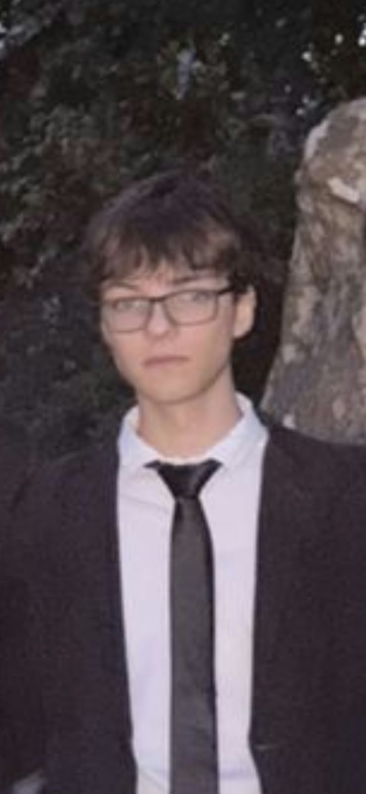
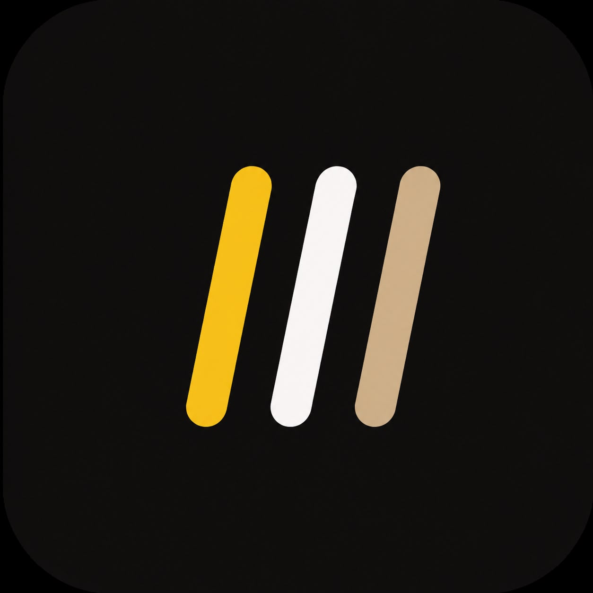
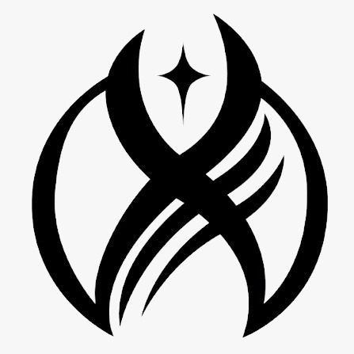

Estudiante de Programación · Desarrollo Web · Tecnología
Actualmente curso el último año de la Tecnicatura en Programación en la EEST N°2 de Tandil. Me apasiona crear aplicaciones web, resolver problemas mediante software y seguir aprendiendo nuevas tecnologías.
Ver proyectosDurante mi formación participé en proyectos de desarrollo web, Como hacer paginas para AMEMT, Videollamadas con gente de globant, Y Desarrollar juegos y Paginas Web
Sitio web desarrollado para inscripciones a examenes finales para el instituto AMEMT. En donde los alumnos pueden ver las fechas de los examenes, la cuota al dia o informacion sobre ellas

Aplicación para gestión y organización de Gimnasios, Permitiendo a los usuarios llevar un control de sus entrenamientos y progresos.

Proyecto en el que hicimos un juego de una sombra en 2D que tiene que pasar niveles esquivando obstaculos y enemigos, hecho para un trabajo que nos encargaron de globant